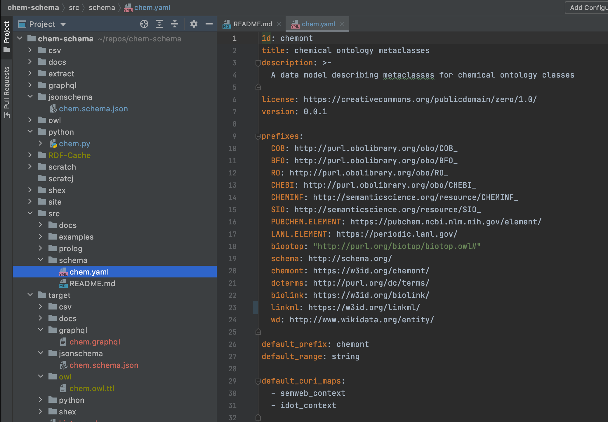
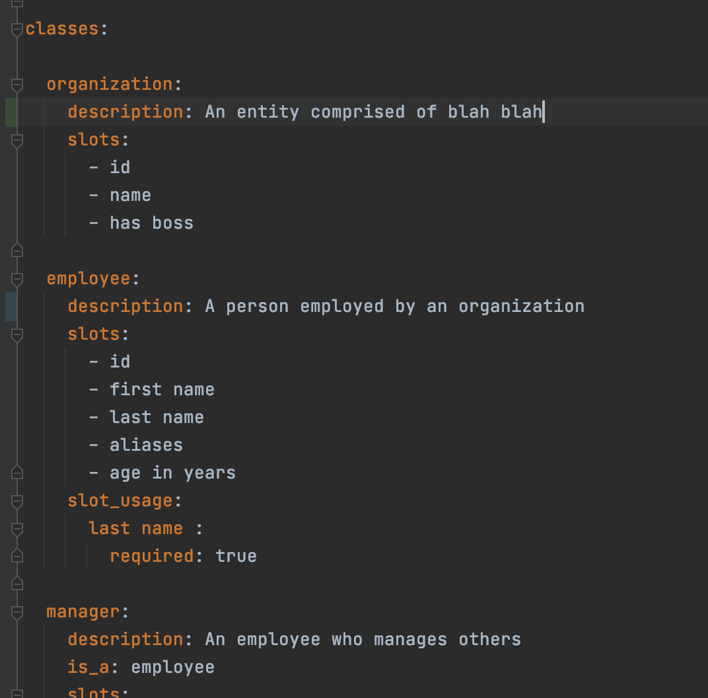
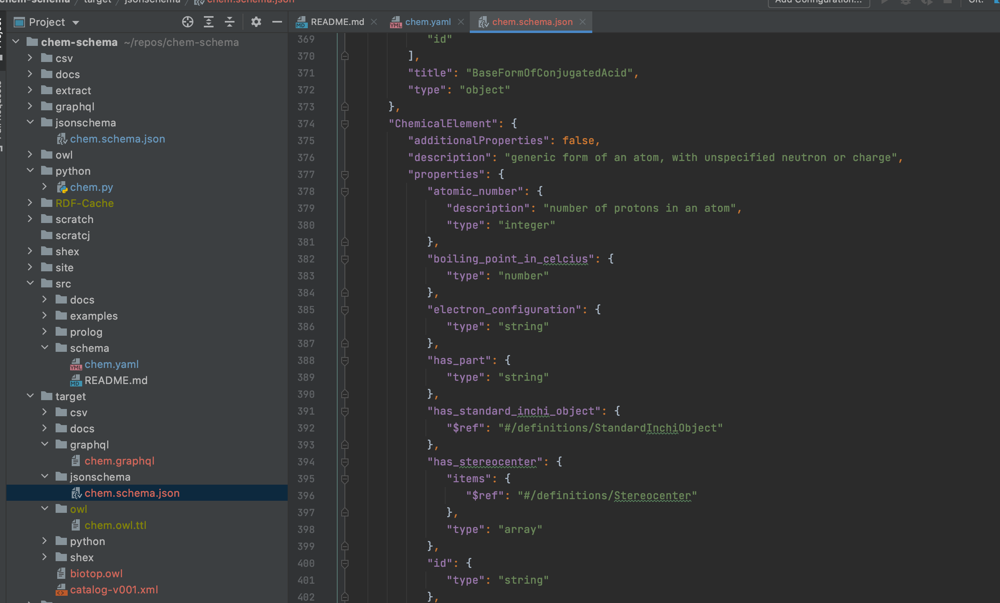
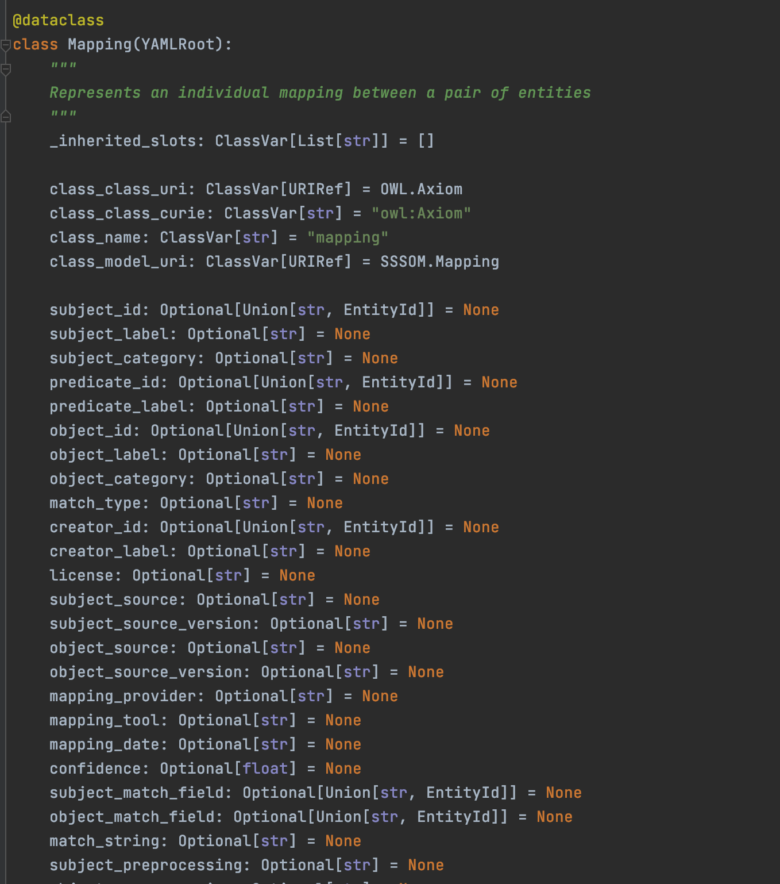
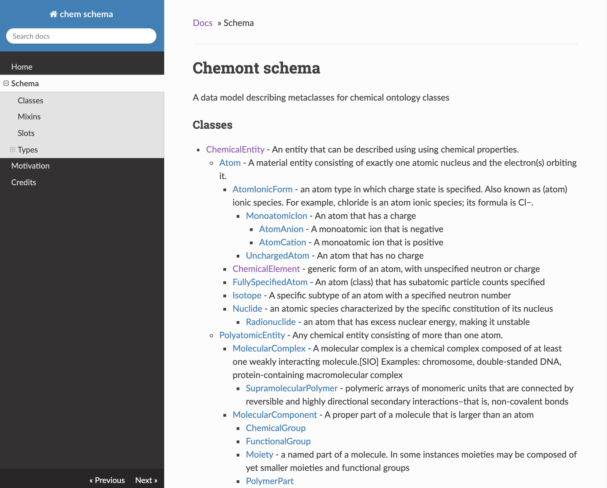

An open framework that simplifies authoring, validating, and sharing data — providing an accessible platform for interdisciplinary collaboration and a reliable way to define and share data semantics.
LinkML Documentation

Use the LinkML modeling language to author schemas and data dictionaries. LinkML supports flexible inheritance, semantic enumerations, control of JSON inlining, pattern-based validation, and logical constraints.
The LinkML metamodel is itself written in LinkML — a mark of the language's expressive power and consistency.
Non-developers can author schemas using Schemasheets — define your data model directly in Excel or Google Sheets, no YAML required.
Modeling DocumentationIn LinkML, every class, slot, and enumeration automatically gets a globally unique URI or IRI. This means your schemas satisfy FAIR principles — Findable, Accessible, Interoperable, and Reusable — from day one, without extra tooling.
Generate JSON-LD context files for semantic-web interoperability while keeping your data in developer-friendly JSON or YAML. Developers can ignore the semantics until they need them.

The LinkML Generator framework compiles your schema into downstream artifacts across every major toolchain. The philosophy: embrace and reuse existing frameworks rather than replace them.

LinkML generates native data classes for multiple programming languages. Python dataclasses and Pydantic models are available today, with generators for TypeScript, Java, and Rust also available.
The LinkML runtime allows generated Python classes to be automatically loaded and dumped from YAML, JSON, CSV, and RDF — keeping your data pipeline flexible.
Use gen-doc to generate searchable documentation sites for
your schema, and gen-erdiagram to produce Mermaid
entity-relationship diagrams — all automatically from your YAML file.
LinkML also assists in publishing schema artefacts using w3id.org for stable, resolvable URIs.

LinkML is more than a language — it's an ecosystem of tools for working with structured data across the research and data engineering communities.
Extract structured, LinkML-compliant data from unstructured text using large language models.
Define schemas directly in Excel or Google Sheets — no YAML required. Outputs a valid LinkML schema.
Bootstrap LinkML schemas from existing data sources — reverse-engineer a schema from your data.
A browser-based spreadsheet validator for ontology-backed data curation, driven by LinkML schemas.
Transform and map data between different LinkML models using a declarative transformation language.
Ontology Access Kit — a Python library for working with ontologies and vocabularies, built on LinkML.
LinkML powers data standards in biomedical research, environmental science, AI governance, and infrastructure projects worldwide.
Moxon SAT, et al. "LinkML: an open data modeling framework." GigaScience. 2026;15:giaf152.
You can get started right away!
Use linkml-project-copier in GitHub to scaffold a new project.
Edit your YAML schema file.
Add example data to your project.
Validate your data against the schema using
linkml-validate.
Convert between YAML, JSON, and RDF using
linkml-convert.
Use the just command runner to generate all downstream artefacts.